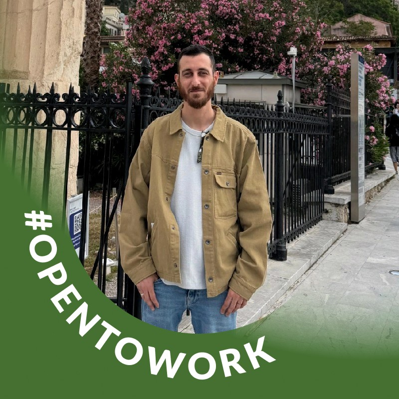

חולון · HolonB.Sc. · שנה ג׳Colman
נעם מרוז
Noam Meroz
מתמחה במדעי הנתונים ובמחקר ופיתוח ב-Sagole
Data science and R&D intern at Sagole

סטודנט שנה ג׳ למדעי הנתונים במכללה למנהל. ב-Python אני משווה מודלים מקומיים לקריאות ענן על מסמכים פיננסיים, כדי להגביל עלות. לפני כן הובלתי צוות מכירות.
Third-year data science student at the College of Management. In Python I compare local models with cloud calls on financial documents, to keep the cost down. Before that I led a sales team.
תכונות
Strengths
- חרוץ
- Diligent
- אנליטי
- Analytical
- מסודר
- Organized
תחומי עניין
Interests
- הסקת מסקנות מבוססות דאטה
- Drawing conclusions from data
- שפות ובלשנות קוגניציה
- Languages and cognition
משחקים בנייד Noam1pro.M@gmail.com 052-330-9070 LinkedIn GitHub
01
ניסיון
Experience
2026 – היוםnow מתמחה במדעי הנתונים ובמחקר ופיתוח · Sagole Data science and R&D intern · Sagole בדיקות קלות לפני מודל כבד, כדי לחסוך זמן מחשוב וקריאות ענן. Light checks before the heavy model, to save compute time and cloud calls.
- ביצעתי בנצ׳מרק למודלי ראייה-שפה מקומיים מול API ראייה בענן על תמונות של מסמכים פיננסיים, ומדדתי איך רזולוציה משנה את עלות הטוקנים.
- תכננתי צינורות היברידיים של OCR וראייה שמסווגים שדות במסמכים פיננסיים ומאמתים התאמה מדויקת.
- תכננתי שכבת ולידציה ב-Python שמריצה מסננים פשוטים לפני מודל כבד.
- מימשתי בדיקות JSON וחבילת pytest מול סט אמת קבוע. נתוני המסמכים נשארים על המחשב.
- Benchmarked local vision-language models against cloud vision APIs on financial-document images, and measured how resolution changes token cost.
- Built hybrid OCR and vision pipelines that classify fields and check them for an exact match.
- Built a Python validation layer so plain filters run before a heavier model.
- Added JSON checks and a pytest suite against a fixed ground-truth set. Document data stays on the machine.
2019 – 2020 ראש צוות מכירות · רילוקיישן לאירופה Sales Team Lead · EU relocation הובלתי צוות של שמונה, עקבתי אחרי מדדים וקיצרתי שלבים איטיים. Led a team of eight, tracked the metrics, and cut slow steps.
- ניהלתי צוות של 8 אנשים במשמרות יומיות, בהעברות משמרת ובמעקב KPI.
- ניתחתי נתוני מכירות ותפוקה, זיהיתי את השלבים האיטיים, וקיצרתי את תהליך העבודה.
- Directed an 8-person team through daily shifts, handoffs, and KPI tracking.
- Analyzed sales and throughput, found the slow steps, and shortened the workflow.
02
פרויקטים
Projects
בכרטיס עם קוד, לחיצה פותחת את הקישור.
On a card with code, a click opens the link.
03
השכלה
Education
B.Sc. במדעי הנתוניםData Science
המכללה למנהל (Colman), 2024 – היום, שנה ג׳.
College of Management (Colman), 2024 – present, year 3.
קורסים: למידת מכונה, סטטיסטיקה, SQL, אלגוריתמים, מבני נתונים.
Coursework: Machine Learning, Statistics, SQL, Algorithms, Data Structures.
04